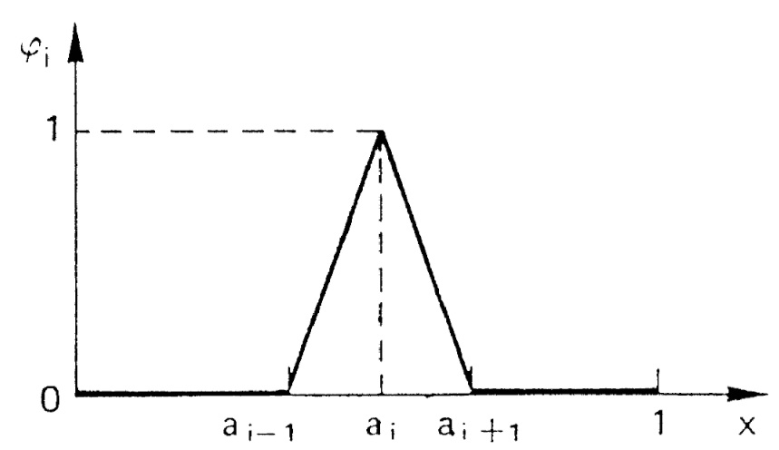

Introduction à la méthode des éléments finis
1. Formulation variationnelle
1.1. Exemple 1-D
Soit à résoudre le problème (
où \(f\) et \(c\) sont des fonctions données continues sur \([a,b]\).
On supposera de plus que la fonction \(c\) est strictement positive sur \([a,b]\).
Un tel problème est appelé problème aux limites.
En faisant le produit scalaire \(L^2(]a,b[)\) de l’équation différentielle avec une fonction-test \(v \in {\cal D}(]a,b[)\) (c’est-à-dire en intégrant sur \([a,b]\)), on a :
soit, en intégrant par parties le premier terme :
car \(v(a)=v(b)=0\) puisque \(v\in{\cal D}(]a,b[)\).
Chaque terme de cette équation a en fait un sens dès lors que \(v\in H^1_0(]a,b[)\).
De plus, \({\cal D}(]a,b[)\) étant dense dans \(H^1_0(]a,b[)\) (§[sec:H10]), cette équation est vérifiée pour tout \(v\in H^1_0(]a,b[)\).
On peut donc définir le nouveau problème :
Ce problème est la formulation variationnelle (ou formulation faible) du problème \(({\cal P})\). Toute solution de \(({\cal Q})\) est appelée solution faible.
Il est immédiat que toute solution forte de \(({\cal P})\) est aussi une solution faible.
1.2. Exemple 2-D
Soit \(\Omega\) ouvert borné de \(\RR^n\).
On veut résoudre le problème
Une solution classique de ce problème est une fonction de \({\cal C}^2(\bar{\Omega})\) vérifiant ([eq:modele-2D]) en tout point de \(\Omega\).
| Au passage, on voit que ceci impose que \(f\) soit \({\cal C}^0(\bar{\Omega})\). |
Toute solution classique vérifie donc :
soit par intégration par parties :
puisque \(\partial_n u = 0 \) sur \(\partial\Omega\).
Or, \(\overline{{\cal C}^1(\bar{\Omega})} = H^1(\Omega)\).
On peut donc définir le nouveau problème :
C’est la formulation variationnelle de \(({\cal P})\).
On voit aussi que ce problème est défini dès lors que \(f\in L^2(\Omega)\).
2. Formulation générale
Les exemples précédents montrent que, d’une façon générale, la formulation variationnelle sera obtenue en faisant le produit scalaire \(L^2(\Omega)\) de l’équation avec une fonction \(v\) appartenant à un espace à préciser (c’est-à-dire en multipliant par \(v\) et en intégrant sur \(\Omega\)), et en intégrant par parties les termes d’ordres les plus élevés en tenant compte des conditions aux limites du problème.
On arrive alors à une formulation du type :
où \(a(.,.)\) est une forme sur \(V\times V\) (bilinéaire si l’EDP de départ est linéaire) et \(l(.)\) est une forme sur \(V\) (linéaire si les conditions aux limites de l’EDP de départ le sont).
3. Théorème de Lax-Milgram
3.1. Définitions et théorèmes
On va introduire ici un outil important pour assurer l’existence et l’unicité de solutions à la formulation variationnelle de problèmes aux limites de type elliptique.
Soit \(V\) un espace de Hilbert.
| C’est de cette propriété que vient l’utilisation du terme “variationnel", puisqu’elle montre le lien avec le “calcul des variations". |
3.2. Retour à l’exemple 1-D
En reprenant l’exemple 1-D précédent, on peut poser :
et
\(a\) ainsi définie est une forme bilinéaire symétrique continue coercive sur \(H^1_0(a,b) \times H^1_0(a,b)\), et \(l\) est une forme linéaire continue sur \(H^1_0(a,b)\). Donc le problème ([eq:FV]) admet une solution unique d’après le théorème de Lax-Milgram. Cherchons maintenant à interpréter cette solution \(u\) de ([eq:FV]). Prenons \(v=\varphi \in {\cal D}(]a,b[)\). Alors
soit, en intégrant par parties :
c’est-à-dire
\({\cal D}(]a,b[)\) étant dense dans \(L^2(]a,b[)\), on a : \(-u"+cu=f\) dans \(L^2(]a,b[)\).
\(u\) étant dans \(L^2(]a,b[)\), et \(f\) et \(c\) étant dans \({\cal C}^0([a,b])\), donc également dans \(L^2(]a,b[)\), on en déduit que \(u"=cu-f\) est aussi dans \(L^2(]a,b[)\).
Puisque \(u\) est dans \(H^1_0(]a,b[)\) et que \(u"\) est dans \(L^2(]a,b[)\), on en déduit que \(u\) est dans \(H^2(]a,b[)\).
Donc \(u\) est dans \({\cal C}^1([a,b])\) (§[sec:sobolev]).
De ce fait, \(cu-f\), c’est-à-dire \(u"\), est dans \({\cal C}^0([a,b])\).
Donc \(u'\) est dans \({\cal C}^1([a,b])\), donc \(u\) est dans \({\cal C}^2([a,b])\).
La solution faible \(u\) est donc aussi solution forte du problème de départ.
En résumé :
-
On est parti d’un problème \(({\cal P})\) et on a introduit sa formulation variationnelle \(({\cal Q})\).
-
On a montré l’existence et l’unicité d’une solution faible (en utilisant le théorème de Lax-Milgram). Toute solution forte étant aussi solution faible, ceci prouve qu’il y a au plus une solution forte pour \(({\cal P})\).
-
On a prouvé que cette solution faible est bien une solution forte. Le problème de départ \(({\cal P})\) a donc une solution unique.
L’intérêt de cette démarche est double :
-
la formulation variationnelle se prête bien à l’étude de l’existence et de l’unicité de solutions,
-
on travaille dans des espaces de Hilbert, ce qui va permettre de faire de l’approximation interne.
3.3. Équations elliptiques d’ordre 2
Soit \(\Omega\) un ouvert borné de \(\RR^n\), de frontière \(\partial\Omega\) assez régulière. Soient des fonctions \(\alpha_{ij}\) (\(1\le i,j \le n\)) dans \({\cal C}^1(\bar{\Omega})\) et \(\beta\) dans \({\cal C}^0(\bar{\Omega})\).
On considère le problème :
où \(\Gamma_0\) et \(\Gamma_1\) forment une partition de \(\partial\Omega\) (\(\Gamma_0 \cap\Gamma_1 = \emptyset\) et \(\Gamma_0 \cup\Gamma_1 = \partial\Omega\)).
Une solution classique de \(({\cal P})\), sous l’hypothèse que \(f\in{\cal C}^0(\bar{\Omega})\) et \(g\in{\cal C}^0(\Gamma_1)\), sera une fonction de \({\cal C}^2(\bar{\Omega})\) vérifiant l’équation en chaque point de \(\Omega\). La formulation variationnelle de \(({\cal P})\) est obtenue par intégration par parties.
Elle s’écrit :
avec \(\ds{ V = \left\{ v \in H^1(\Omega) \; , \; v=0 \hbox{ sur }\Gamma_0 \right\} }\). Cette formulation est en fait définie dès lors que \(\beta\) et les \(\alpha_{ij}\) sont dans \(L^\infty(\Omega)\), que \(f\) est dans \(L^2(\Omega)\) et que \(g\) est dans \(L^2(\Gamma_1)\). Posons
Il est immédiat que \(a\) est une forme bilinéaire continue et \(l\) une forme linéaire continue sur \(V\).
Si l’EDP de départ [eq:edp-elliptique] vérifie les deux hypothèses d’ellipticité :
-
il existe \(\alpha >0\) tel que \(\forall \xi=(\xi_1, \ldots , \xi_n)\in\RR^n\), \( {\sum_{i,j=1}^n \alpha_{ij}(x) \, \xi_i \, \xi_j \ge \alpha \, \| \xi \|^2 }\) presque pour tout \(x\in\Omega\)
-
il existe \(\beta_0\) tel que \(\beta(x) \ge \beta_0\) presque pour tout \(x\in\Omega\)
alors \(a\) est coercive :
-
sur \(H^1_0(\Omega)\) dès que \(\ds{\alpha_0 > \frac{-\alpha}{C(\Omega)^2}}\) (et donc en particulier si \(\beta\ge 0\)) où \(C(\Omega)\) est la constante de l’inégalité de Poincaré, voir le théorème [thr:11].
-
sur \(H^1(\Omega)\) si \(\beta > 0\)
Par application du théorème de Lax-Milgram, on a donc existence et unicité d’une solution à la formulation variationnelle \(({\cal Q})\) :
-
si \(\Gamma_0 = \partial\Omega\) (c’est-à-dire \(\Gamma_1=\emptyset\)) et si \(\ds{\beta > \frac{-\alpha}{C(\Omega)^2}}\)
-
si \(\Gamma_1\ne \emptyset\) et si \(\beta > 0\)
4. Approximation interne
4.1. Principe général
Soit \(\Omega\) un domaine ouvert de \(\RR^n\) (\(n=1,2\) ou 3 en pratique), de frontière \(\partial\Omega\), et sur lequel on cherche à résoudre une équation aux dérivées partielles, munie de conditions aux limites.
En écrivant la formulation variationnelle, on obtient un problème de la forme
où \(V\) est un espace de Hilbert. Sous réserve que l’équation de départ ait de bonnes propriétés, c’est-à-dire par exemple qu’on soit dans les hypothèses du théorème de Lax-Milgram, \(({\cal Q})\) admet une solution unique \(u\).
Pour obtenir une approximation numérique de \(u\), on va maintenant remplacer l’espace \(V\) qui est en général de dimension infinie par un sous-espace \(V_h\) de dimension finie, et on va chercher à résoudre le problème approché
\(V_h\) étant de dimension finie, c’est un fermé de \(V\). \(V\) étant un espace de Hilbert, \(V_h\) l’est donc aussi. D’où l’existence et l’unicité de \(u_h\), à nouveau par exemple d’après le théorème de Lax-Milgram. L’espace \(V_h\) sera en pratique construit à partir d’un maillage du domaine \(\Omega\), l’indice \(h\) désignant la ``taille typique'' des mailles.
Lorsque l’on construit des maillages de plus en plus fins, la suite de sous-espaces \((V_h)_h\) formera une approximation interne de \(V\), c’est-à-dire que, pour tout élément \(\varphi\) de \(V\), il existe une suite de \(\varphi_h\in V_h\) telle que \(\|\varphi-\varphi_h\|\longrightarrow 0\) quand \(h\longrightarrow 0\).
| Cette méthode d’approximation interne est également appelée méthode de Galerkin. |
4.2. Interprétation de \(u_h\)
On a \(a(u,v)=l(v), \forall v\in V\), donc en particulier \(a(u,v_h)=l(v_h), \forall v_h\in V_h\), car \(V_h\subset V\).
Par ailleurs, \(a(u_h,v_h)=l(v_h), \forall v_h\in V_h\).
Par différence, on en déduit que
| Dans le cas où \(a(.,.)\) est symétrique, il s’agit d’un produit scalaire sur \(V\). \(u_h\) peut alors être interprétée comme la projection orthogonale de \(u\) sur \(V_h\) au sens de \(a(.,.)\). |
4.3. Estimation d’erreur
On a :
Or \(v_h-u_h \in V_h\). Donc \(a(u-u_h,v_h-u_h)=0\) d’après (Orthogonalité de Galerkin).
On a donc :
\(a\) étant coercive, il existe \(\alpha > 0\) tel que \(a(u-u_h,u-u_h) \ge \alpha \|u-u_h\|^2\), où \(\|.\|\) est une norme sur \(V\).
Par ailleurs, \(a\) étant continue, il existe \(M > 0\) tel que \(a(u-u_h,u-v_h)\le M \|u-u_h\| \, \|u-v_h\|\).
En réinjectant ces deux inégalités de part et d’autre de [eq:estim1] et en simplifiant par \(\|u-u_h\|\) on obtient
c’est-à-dire
où \(d\) est la distance induite par \(\|.\|\).
Cette majoration est appelée lemme de Céa. Elle ramène l’étude de l’erreur d’approximation \(u-u_h\) à l’étude de l’erreur d’interpolation \(d(u,V_h)\).
5. Principe général de la méthode des éléments finis
La démarche générale de la méthode des éléments finis est la suivante.
On a une EDP à résoudre sur un domaine \(\Omega\).
On écrit la formulation variationnelle de cette EDP, et on se ramène donc à un problème du type
On va chercher une approximation de \(u\) par approximation interne.
Pour cela, on définit un maillage du domaine \(\Omega\), grâce auquel on va définir un espace d’approximation \(V_h\), s.e.v. de \(V\) de dimension finie \(N_h\) (par exemple \(V_h\) sera l’ensemble des fonctions continues sur \(\Omega\) et affines sur chaque maille).
Le problème approché est alors
Soit \((\varphi_1,\ldots,\varphi_{N_h})\) une base de \(V_h\).
En décomposant \(u_h\) sur cette base sous la forme
le problème \(({\cal Q}_h)\) devient
ou encore par linéarité de \(a\) et \(l\) :
c’est-à-dire résoudre le système linéaire
soit
| La matrice \(A\) est a priori pleine. |
Toutefois, pour limiter le volume de calculs, on va définir des fonctions de base \(\varphi_i\) dont le support sera petit, c’est-à-dire que chaque fonction \(\varphi_i\) sera nulle partout sauf sur quelques mailles.
Ainsi les termes \(a(\varphi_i,\varphi_j)\) seront le plus souvent nuls, car correspondant à des fonctions \(\varphi_i\) et \(\varphi_j\) de supports disjoints.
La matrice \(A\) sera donc une matrice creuse, et on ordonnera les \(\varphi_i\) de telle sorte que \(A\) soit à structure bande, avec une largeur de bande la plus faible possible.
A ce niveau, les difficultés majeures en pratique sont de trouver les \(\varphi_i\) et de les manipuler pour les calculs d’intégrales nécessaires à la construction de \(A\).
Sans rentrer pour le moment dans les détails, on peut toutefois indiquer que la plupart de ces difficultés seront levées grâce à trois idées principales :
- Le principe d’unisolvance
-
On s’attachera à trouver des degrés de liberté (ou ddl) tels que la donnée de ces ddl détermine de façon univoque toute fonction de \(V_h\). Il pourra s’agir par exemple des valeurs de la fonction en quelques points. Déterminer une fonction reviendra alors à déterminer ses valeurs sur ces ddl.
- Définition des \(\varphi_i\)
-
On définira les fonctions de base par \(\varphi_i=1\) sur le \(i^{\hbox{\tiny{ème}}}\) ddl, et \(\varphi_i=0\) sur les autres ddl. La manipulation des \(\varphi_i\) sera alors très simplifiée, et les \(\varphi_i\) auront par ailleurs un support réduit à quelques mailles.
- La notion de famille affine d’éléments
-
Le maillage sera tel que toutes les mailles soient identiques à une transformation affine près. De ce fait, tous les calculs d’intégrales pourront se ramener à des calculs sur une seule maille de référence, par un simple changement de variable.
6. Retour à l’exemple 1-D
On reprend le problème 1-D [eq:modele-1D].
On a écrit sa formulation variationnelle Exemple 1-D et montré Retour à l’exemple 1-D qu’elle admet une solution unique.
On s’intéresse à présent à la construction de l’espace d’approximation \(V_h\).
6.1. Construction du maillage
La première étape consiste à construire un maillage de \(\Omega = ]a,b[\) en définissant une subdivision (pas nécessairement régulière) \(a=x_0 < x_1 < \ldots < x_N < x_{N+1}=b\).
Le maillage est donc une collection indexée de \(N_{ma}\)(\(=N\)) intervalles
et on a
On note \(h_i = x_{i+1}-x_i\) et \(h = \max_{1\leq i \leq \Nma} h_i\).
Le maillage est dit uniforme si \(h_i=h\) pour tout \(i=\{1,...,\Nma\}\). Enfin on note \(\calTh=\{I_i\}_{i=\{1,...,\Nma\}}\), \(h\) représentant la finesse globale du maillage.
| En 1D on a \(\Nso = \Nma+1\), en dimension supérieure des relations existent entre le nombre de sommets et de mailles en fonction du type de maille, ce sont les relations d’Euler. |
6.2. Construction de l’espace d’approximation
L’étape suivante est de choisir les fonctions de forme ou fonctions de base sur chaque maillage.
On choisit les fonctions de \(V_h\) telle que leur restriction sur chaque maillage soit un espace polynomial.
On pose alors
\(W_h\) est un espace de dimension finie égale à \((k+1)*\Nma\) mais il n’est pas inclus dans \(H^1_0(\Omega)\) et ne peut donc pas être utilisé pour l’approximation du problème (<<[eq:FV]>>). En effet les fonctions de \(w_h \in W_h\) peuvent être discontinues aux interfaces entre les maillages et un résultat d’analyse fonctionnelle montre que dans ces conditions \(w_h \ni H^1(\Omega)\). Par ailleurs les fonctions de \(W_h\) ne sont pas nécessairement nulles au bord de \(\Omega\).
On pose donc
en d’autres termes, en dimension, on a
Le problème approché sur \(V_h\) est :
On s’intéresse à présent à des exemples concrets d’espaces d’approximations dans les deux sections suivantes Element fini de Lagrange et Element fini de Lagrange.
6.3. Element fini de Lagrange
On introduit les espaces vectoriels suivants:
et
Les éléments de ces espaces sont des fonctions continues et affines par morceaux. Ils sont dérivables par morceaux sur chaque maille et ils sont continus aux interfaces entre les mailles.
On a le résultat d’analyse fonctionnelle suivant:
On introduit la famille de fonctions \(\{\varphi_1,...,\varphi_\Nso\}\) que l’on définit sur chaque maille de la manière suivante, pour tout \(i \in \{2,...,\Nso-1\}\),
et
| Les fonctions \((\varphi_i)_{i=1,...,\Nso}\) sont dans \(\Pch{1}\) et \((\varphi_i)_{i=2,...,\Nso-1}\) sont dans \(\Pcho{1}\). |
| Les fonctions \((\varphi_i)_{i=1,...,\Nso}\) satisfont les relations |
où \(\delta_{ij}\) désigne le symbole de Kronecker tel que \(\delta_{ij} = 1\) si \(i=j\) et \(\delta_{ij}=0\) si \(i \neq j\).
Les fonctions \(\varphi_i\) sont appelées fonctions chapeau du fait de leur graphe, voir figure [fig:chapeau].

On introduit l’opérateur d’interpolation suivant:
Pour toute fonction \(v \in \Ck{0}(\bar{\Omega})\), \(\Ich{1}{v}\) est la seule fonction continue affine par morceaux prenant les mêmes valeurs que \(v\) aux sommets \(x_i, i=1,...,\Nso\).
\(\Ich{1}{v}\) est appelée l’interpolé de Lagrange de \(v\) de degré \(1\).
| En dimension 1, les fonctions de \(H^1(\Omega)\) sont continues, on peut donc voir comme un opérateur de \(H^1(\Omega)\) dans \(H^1(\Omega)\). On montre qu’il est continu et que sa norme \(\|\Ich{1}\|_{\mathcal{L}(H^1(\Omega),H^1(\Omega))}\) est uniformément bornée en \(h\), c’est-à-dire qu’il existe une constante \(c\), indépendante de \(h\), telle que pour tout \(v \in H^1(\Omega)\) |
6.4. Estimation de l’erreur d’interpolation
On dit que l’erreur d’interpolation est d’ordre 2 en norme \(L^2\) et d’ordre 1 en semi-norme \(H^1\) et donc en norme \(H^1\).
6.5. Element fini de Lagrange
On introduit les espaces vectoriels suivants: \(\label{eq:9}\)
et
6.6. Operateur d’interpolation
On introduit l’opérateur d’interpolation suivant:
Pour toute fonction \(v \in \Ck{0}(\bar{\Omega})\), \(\Ich{k}{v}\) est la seule fonction continue polynomial de degré \(k\) par morceaux prenant les mêmes valeurs que \(v\) aux sommets \(x_i, i=1,...,\Nso\). \(\Ich{k}{v}\) est appelée l’interpolé de Lagrange de \(v\) de degré \(k\).
| En dimension 1, les fonctions de \(H^1(\Omega)\) sont continues, on peut donc voir comme un opérateur de \(H^1(\Omega)\) dans \(H^1(\Omega)\). On montre qu’il est continu et que sa norme \(\|\Ich\|_{\mathcal{L}(H^1(\Omega),H^1(\Omega))}\) est uniformément bornée en \(h\), c’est-à-dire qu’il existe une constante \(c\), indépendante de \(h\) mais dépendante de \(k\), telle que pour tout |
Le résultat suivant permet d’estimer la précision de l’opérateur d’interpolation,
| L’estimation [eq:14] montre que l’erreur d’interpolation est d’ordre \(k+1\) en norme \(\|\cdot\|_{0,\Omega}\) et qu’elle est d’ordre \(k\) en norme \(|\cdot|_{1,\Omega}\). Elle est donc d’ordre \(k\) en norme \(\|\cdot\|_{1,\Omega}\). |
6.7. Analyse de convergence
Nous nous intéressons à présent à l’analyse de la convergence de \(u_h\) du problème approché de [eq:11] vers la solution \(u\) du problème exact [eq:F] lorsque \(V_h=\Pcho{1}\) ou plus généralement \(V_h=\Pcho{k},\; k\geq 1\).
6.7.1. Estimation en norme \(H^1\)
Il s’agit dans un premier temps d’estimer l’erreur \(u-u_h\) en norme \(H^1\).
Pour cela on part de l’estimation [eq:cea], on a
pourvu que la solution exacte soit suffisamment régulière, c’est-à-dire \(u \in H^{k+1}(\Omega)\).
| On notera que \(\Ich{k}{u} \in \Pcho{k}\) puisque \(u \in H^1_0(\Omega)\) et donc que \(\Ich{u}(a)=\Ich{u}(b)=0\). |
On a donc le résultat suivant
| On dit que l’estimation d’erreur [eq:13] est optimale car elle est du même ordre que l’erreur d’interpolation en norme \(H^1\), voir la proposition Proposition. |
6.8. Estimation en norme \(L^2\)
| On dit que l’estimation d’erreur [eq:16] est optimale car elle est du même ordre que l’erreur d’interpolation en norme \(L^2\), voir la proposition Proposition. |
7. Formulation algébrique \(V_h=P_{c,h}^1\)
En décomposant la solution approchée \(u_h\) sur cette base sous la forme \({u_h = \sum_{i=1}^N \mu_i \; \varphi_i}\), on obtient, comme au paragraphe [sec:general], le système linéaire \(A\mu=b\), avec :
Le support de \(\varphi_i\) étant réduit à \([x_{i-1},x_{i+1}\)], on en déduit que
\(A\) est donc tridiagonale.
7.1. Exercices
-
Dans le Définitions et théorèmes, montrer que, dans le cas où \(a\) est symétrique, si \(u\) est solution du problème variationnel, alors elle est solution du problème de minimisation.
-
Montrer que \(\nabla J[u\)(v) = a(u,v) - l(v)].
-
Montrer que, si \(a\) est coercive, la matrice \(A\) de (<<[eq:lin]>>) est inversible. (C’est donc la démonstration du théorème de Lax-Milgram en dimension finie.)
-
Pour l’exemple 1-D traité dans ce chapitre, démontrer qu’on est bien dans les hypothèses du théorème de Lax-milgram
-
Calculer explicitement la matrice \(A\) pour cet exemple.
-
Pour le problème 2-D du §[sec:modele-2D], montrer que la formulation variationelle (<<[eq:FV2]>>) admet une solution unique, qui est aussi solution classique si \(f \in H^2(\Omega)\).
-
Démontrer les résultats du §[sec:elliptique]